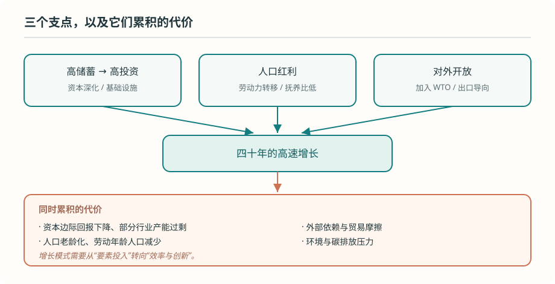
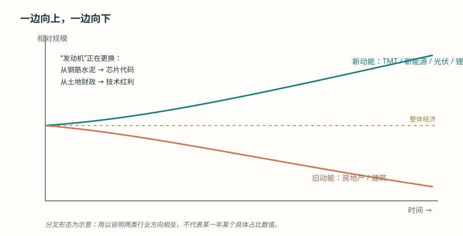
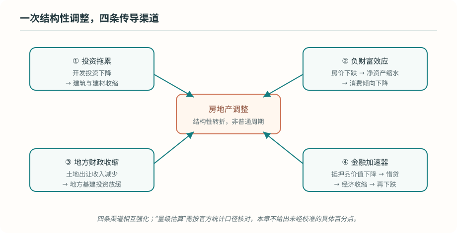

中国宏观经济深度分析
用前二十五章的工具——增长核算、IS-LM、金融加速器、开放经济框架——来解剖中国经济：它靠什么高速增长，代价积累在哪里，新旧动能如何分化，房地产调整怎样传导，以及政策框架正在如何转变。
增长奇迹的结构性根源与代价
改革开放以来，中国经济保持了持续几十年的高速增长，这在世界经济史上极为罕见。理解它，不需要“叫好”或“唱衰”，而要用框架把它拆开：增长从来不是单一因素的结果，而是一组结构性支点与它们代价的共同产物。
三个常被提及的支点是：高储蓄与高投资（支撑资本深化与基础设施）、人口红利（大量年轻劳动力从农村转到城市、从农业转到制造业，抬高劳动生产率）、对外开放（出口导向，融入全球分工体系）。用第 21 章的索洛增长框架看，早期增长很大程度上是资本深化驱动的。

把增长拆成投入与效率两部分，用的是第 21 章的增长核算恒等式：
随着资本边际回报递减、劳动增长放缓，增长的驱动力需要从“要素投入”转向“效率与创新”。各种关于“TFP 占比上升到多少”的说法属于文献估算与经验相关，本章不给出某一年未经官方口径核对的具体百分比。
| 说法 | 类型 | 能说明什么 / 不能说明什么 |
|---|---|---|
| 增长核算 ΔY/Y=αΔK/K+(1−α)ΔL/L+ΔA/A | 会计恒等式 | 给定 α 的归因分解；TFP 残差是混合度量，不等于纯粹技术创新 |
| 新动能行业增速高于整体、旧动能（房地产与建筑）收缩（K 型） | 经验相关 | 描述方向性事实，不单独构成“新动能带动整体增长”的因果结论 |
| 房地产调整的四条传导渠道 | 机制模型 | 条件性传导；具体拖累幅度需校准，不是制度常数 |
| “宏观调控”→“宏观经济治理” | 政策实践 | 制度与措辞的演变，不是可检验的行为模型 |
| 交互图中的资本/劳动/TFP 贡献 | 教学示意 | 构造演算，用于检验恒等式的加总，不对应任何年份官方统计 |
演算：把产出增长拆成资本、劳动与 TFP
用增长核算恒等式看三种投入的相对贡献。修改资本/劳动增长率、TFP 增速与资本弹性，堆叠贡献与数字同步更新。所有数值为构造演算，不对应任何年份的官方统计。
新旧动能分化
近年中国经济的一个显著结构特征，是新旧动能分化：新动能行业（信息技术、新能源汽车、光伏、锂电池、高端装备、生物医药等）增速高于整体经济，而旧动能（房地产与建筑）持续收缩，两者走势呈现“K 型”——一边向上、一边向下。

分化的宏观含义比“产业更替”更深：它意味着经济的“发动机”正在更换——从钢筋水泥转向芯片代码，从土地财政转向技术红利。在 IS 曲线上，投资效率高的新动能与效率低的旧动能对自然利率的影响不同，这也是关于“自然利率是否下降”讨论激烈的背景之一。
房地产调整的宏观冲击
2021 年以来的房地产市场调整，是近二十年来最严峻的挑战之一。它不是一次普通的周期性调整，而是结构性转折。理解其冲击，关键是看清它通过哪几条渠道传导到宏观总量。

- 投资拖累：开发投资下降 → 建筑与建材收缩。
- 负财富效应：房价下跌 → 居民净资产缩水 → 消费倾向下降（这是第 13 章生命周期—持久收入假说的直接应用）。
- 地方财政收缩：土地出让收入是地方财政的重要来源，卖地减少会挤压基建投资。
- 金融加速器反向运行：抵押品价值下降 → 银行惜贷 → 经济收缩 → 资产价格进一步下跌（第 14 章机制）。
从“宏观调控”到“宏观经济治理”
很长一段时间里，中国使用“宏观调控”这一术语，核心是短期需求管理：“热了泼水、冷了加柴”。这在以需求不足为主要矛盾的时期很有效（如 2008 年后的四万亿），但面对结构性问题，短期需求管理不够用。
近年“宏观经济治理”这一表述开始高频出现。它不只是措辞变化，而是内涵的扩展：除了短期逆周期调节，还包括跳周期设计与结构性改革。可以分成三个层次来理解：
- 短期工具：降准降息、增加专项债发行、加大转移支付等。
- 中期结构：推动新质生产力，加大对前沿领域的投入（对应第 22 章的内生增长：技术进步不是外生的，而是政策引导与研发投入的结果）。
- 长期制度：完善社保体系（降低预防性储蓄动机）、改革户籍制度、推进要素市场化改革。
在 IS-LM 框架（第 11 章）下，可以这样描述当前格局：房地产与消费疲软使 IS 曲线向左移动；央行宽松使 LM 曲线向右移动以对冲，但货币传导可能因信心不足、信贷需求偏弱而受阻；财政政策通过增加政府支出把 IS 曲线拉回右边。所以政策组合大致是“宽货币 + 宽财政 + 结构性改革”，重点在修复信心与调整结构。
机遇与挑战
关于具体规模（如各类债务余额、老龄化占比、关税税率）的说法很多，但口径与版本差异大，必须回到官方与央行数据核对；本章只陈述机制与方向，不引用未经核对的精确数字。
- 人口老龄化加速：劳动年龄人口减少会压低潜在增长率。用索洛模型看，这相当于 L 增长的负面冲击：一旦劳动不再增长，人均产出增长必须更多依靠技术进步 A。
- 地方债务：解决之道通常不是大规模违约（可能引发系统性风险），而是债务置换、资产盘活与财税体制改革渐进消化——这需要多年时间。
- 外部环境：科技、金融与地缘领域的摩擦可能使出口部门面临长期结构性逆风，外需对增长的贡献趋降。
另一方面，中国经济仍有一些结构性优势：制造业体量、研发投入与工程师规模、较高的居民储蓄率、仍有提升空间的城镇化率、以及超大规模市场。一个重要判断是：“追赶者”阶段大致结束，但“并行者”阶段的增长潜力依然存在——在大量中等技术领域，仍可通过学习、消化与吸收获得进步。
本章用增长核算、动能分化与房地产传导三个框架解剖了中国经济；下一章把镜头拉向全球，看世界宏观经济的当下与经济体间的联动。
来源与阅读
本章以框架与机制为主，不给出未经官方口径核对的精确数值；数据请以以下权威来源为准。